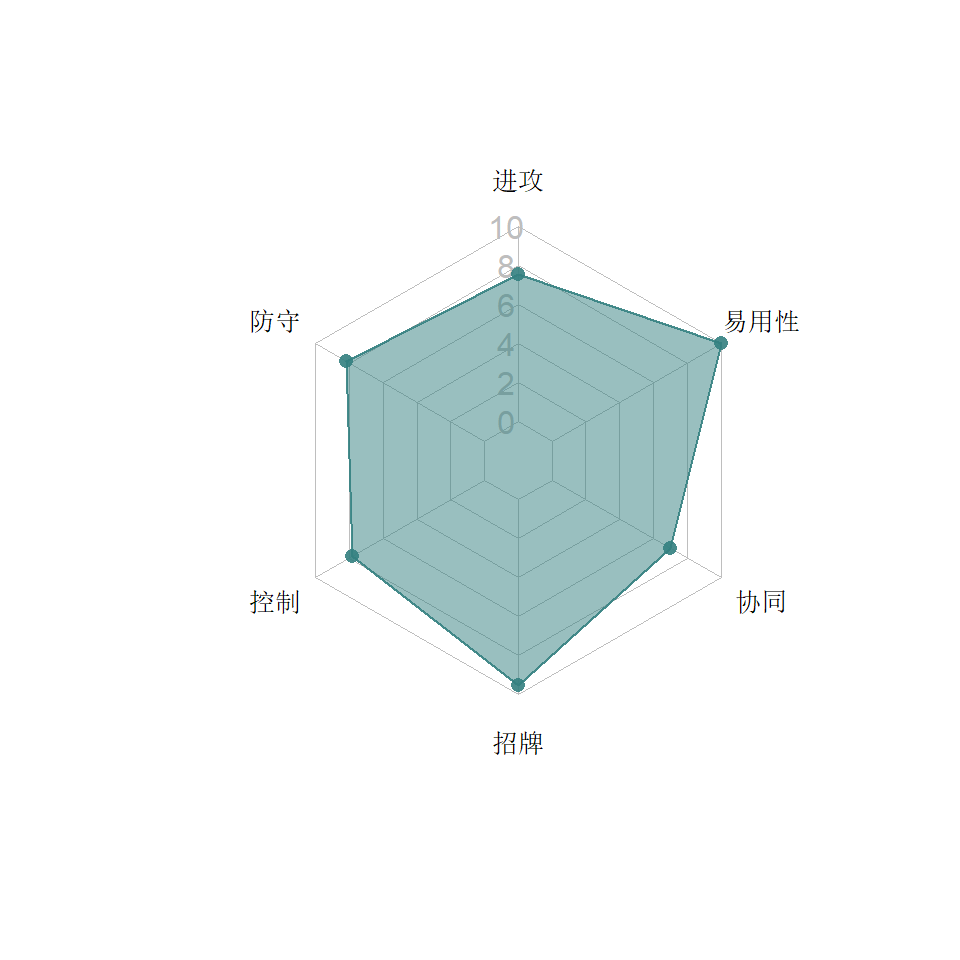
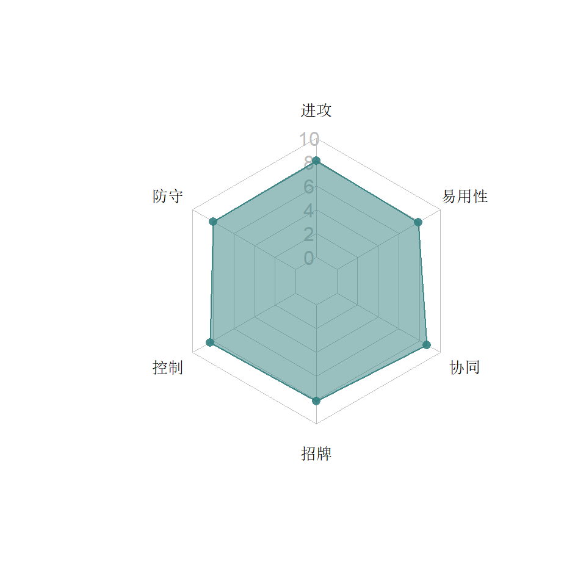
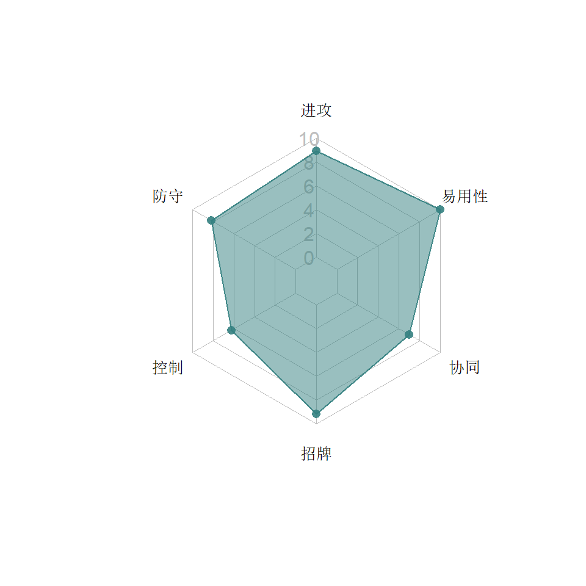
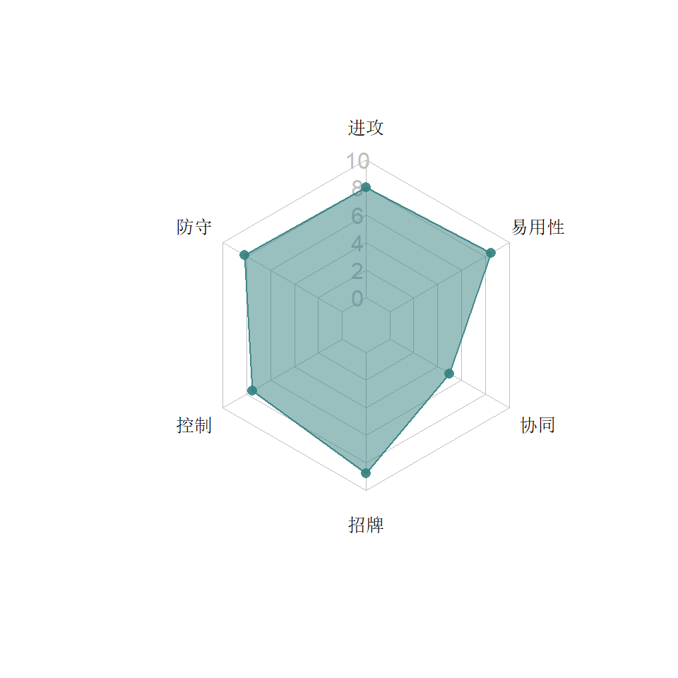
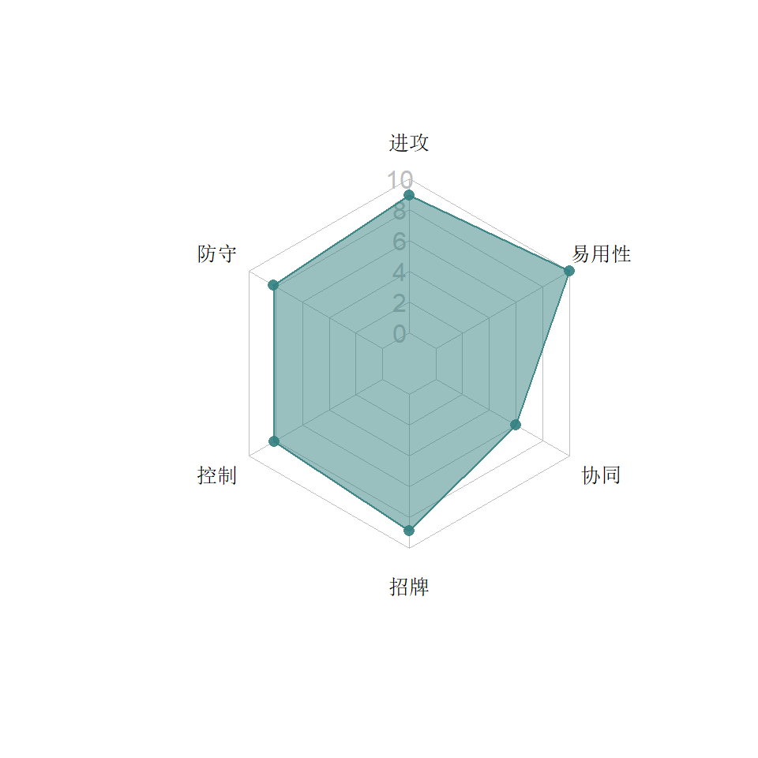

4  斗士系
斗士系
斗士系机器人攻高血长护甲厚，打法蛮横，输出快。优秀的抗dot抗暴击等性能，使他们在面对战士系、侦查系的时候优势巨大。
类别关键字：加攻，护甲，抗暴击，净化，克流血
4.1 斗擎


4.1.1 特点分析
斗士擎天柱（斗擎）作为开服即发布的机器人，早期几乎用来克制碎骨魔和未削弱版伤害加速器的唯一手段，成为了无数玩家追捧的对象，官方甚至专门将他四星版本标价出售。他简单粗暴的打法，残血翻盘的单兵能力，优秀的协同，既很好地诠了电影作品中那个霸气领袖，也令他一直在斗士系位置稳定。
4.1.1.1 能力
- 主动攻击时可以获得攻击加成，主动防御可以获得防御加成，自身遭受流血的时候可以把输出变成回血，超过一层的流血马上净化掉换成能量。
- S1是为数不多的只打一下的特殊技，但这一下血越少杀伤越大，风刃30多下的S3也难望其项背；S2除了杀伤力巨大，流血概率也更高；S3基本上就是弱化的S2，平时很少使用。
4.2 碾碎器


4.2.1 特点分析
作为游戏第一批人物，碾碎器的角色一直是肉厚型猛汉。
4.2.1.1 能力
碾碎器技能不多。重击在暴击时必然施加燃烧。天然护甲高（17%），受到攻击时被动触发的护甲和降爆让很多流血系角色很难在他身上占到便宜。
- S1施加两层降暴，降低对手格挡精通，增大防御伤害。
- 主要输出手段是S2，对方能量越多，砍的越多。
- S3乏善可陈，输出太低，无非是暴击燃烧的概率高过普通重击，正常情况没人会使用S3。
4.3 汽车大师


4.3.1 特点分析
汽车大师是这个游戏最早一批的机器人，在游戏的早期以其霸气的打法和蛮横的招牌吸引了无数玩家。
4.3.1.1 能力
- 前冲时的不可阻挡，令其在打法上极具侵略性。早期的汽车大师前冲都不可阻挡时间长，即使被侧闪也不会马上遭到反击，后来官方对此进行了削弱，使得面对电脑操作的汽车大师，侧闪反击套路更容易。这项调整对玩家的汽车大师也有一定的影响：重击撞倒后前冲压起身不像其他角色那么灵，电脑很容易闪开。
- 重击会随机施加一种减益（破甲、降能量功率、减攻），能进一步扩大汽车大师在战斗中的优势。
- S1是游戏中少数几个只有输出没有效果的特殊技，所以除了有时在需要能量型攻击的场合打打输出，基本上无用。
- S2之后长时间的霸体可以对对方形成极大的威慑力，杀伤也很高。
- S3虽然杀伤力极大并且施加6个减益，但由于自身也扣血，所以不推荐使用。
4.4 钢锁


4.4.1 特点分析
钢锁的发布在一定程度上夺走了斗擎“流血克星”的风头，因为他的招牌不但能净化流血还能净化其他伤害减益（DOT）。
4.4.1.2 招牌
净化所有DOT，并转换为同等数目的攻击加成。突袭中钢锁面对流血模块尤其是流血纳米千（血纳千）很有心得。不过净化触发略慢一拍，还是会承受一定伤害，所以建议吃到DOT时尽快变形阻止伤害。
4.5 猩猩队长


4.5.1 特点分析
猩猩队长的发布彻底改变了野兽系在这个游戏中的地位，他是野兽净化组合的灵魂人物。
4.5.1.1 能力
- 猩猩队长自带令人头痛的黄色护盾，100%的暴击抗性，让他防守时克制了很多类别（爆破，战士和侦查）。重击后会将护甲转换为攻击，让他行进攻时有很多花样。S1拥有复仇式的流血能力，没有吃到流血时就没有必要使用了。s2是主要的进攻手段，但是s2经常容易连招打空。S3适合长战斗。
- 除了牺牲护甲可以加攻，在对手防御时也会随机获得加攻，所以猩猩在屈防对手时一定多打几下，而不要急于放重击。
- 猩猩的重击是一种神奇的存在：不会被声波反弹，会触发碎骨魔被动流血，像近战；但是又会被阿尔茜规避掉，像远程。
4.5.1.2 招牌
招牌是根据自己身上护甲的数目，加速dot的过期。并且每过期一个流血减益，就进行一定程度的自我修复。流血类机器人面对高觉醒的猩猩，经常会有越打血越多的痛苦。因为回血只针对流血DOT，对玩家来说，只要组野兽净化对，就不需要特别在意猩猩是否觉醒。
4.6 野牛


4.6.1 特点分析
野牛是较晚发布的斗士，打法异于常人。主动站防类的代表人物。
4.6.1.1 能力
- 站防一段时间获得霸体，每次前冲获得加攻。但是没有霸体时一后退就失去所有的加攻，这让野牛的打法很古怪，只有在霸体的时候前后前后几次把攻击堆起来，但是无脑的前冲后退少不了吃一些伤害。
- S1很鸡肋，如果没有堆到足够的加攻，全程喷火都不一定出燃烧，这喷火器是马戏团的吗？S2虽然输出大，但是不可防御的属性对玩家意义不大，主要看是否打晕，眩晕概率同样取决于加攻的数目。真正凶狠的还靠S3。
4.7 惊天雷


4.7.1 特点分析
在官方宣布“不再发布新机器人”时，坊间盛传Kabam失去了孩之宝的版权1。没想到在2019年4月的二周年庆时，Kabam发布了新的挑战任务（地图与之前小黄蜂发布时的相同），并且Boss是惊天雷不说，完成任意难度的挑战都能获得惊天雷（2~4星）。
虽然惊天雷是斗士让人有点费解，但是这个“红蜘蛛重涂”自一登场就让人觉得有点霸气外露。
在泰坦货币商店中惊天雷的价格是17万。
4.7.1.1 能力
- 惊天雷不产生任何暴击。原本要触发的任何暴击都变为相当于此次暴击伤害8%的近战增益。
- 惊天雷重击时净化以下减益：震击/燃烧/流血/逆火/目眩。这让惊天雷不但单兵就相当于觉醒钢锁，还超越了动物园的协同，因为连蝎子的独门绝技都不怕。
- 每净化一个减益且惊天雷重击命中，则施加一层7秒内80%攻击的燃烧。
- 净化减益时获得一个3~8%的近战增益，持续7秒。
- 近战攻击：刷新所有近战增益过期时间。近战攻击后侧闪也能刷新。
- 侧闪的时候被近战击中会变得不可阻挡，不过持续时间并不长，可以防止在近战缠斗中走位失误被对手抓住。
- 将对方从地面类载具形态打断时，7秒内获得20%的护甲和10%的近战增益。打击正变形为地面类载具的敌人时攻击+100%
- 远程攻击获得10%的近战增益，持续0.9秒
- 14%血以上时，惊天雷的防御不会被地面类载具重击击倒。
官方也没有具体定义什么是“地面类载具”，反正大部分重击他都能防住（天火这种变飞机的防不住，但震天尊这种飞机又可以防住……）。这在游戏中真是少有（之前只有背水一战精通和某盟战模块有此性能） - 防御的格挡精通+15%，对地面载具的机器人再+15%
- 适时格挡刷新所有近战增益。适时格挡地面载具机器人的近战可以获得10%的近战加成并弹开对手。也就是惊天雷也有搅拌者/天火们的反弹对手能力。
三个S技的动作与红蜘蛛完全相同，但效果差别巨大：
- S1：第一拳命中后刷新所有近战增益，后续每一发射击命中获得一层10%的近战加成2秒。
- S2：命中刷新所有近战增益。每层增益+2%伤害。
- S3：施加相当于攻击力60~100%的震击6秒。惊天雷身上每层增益+2%震击伤害。敌人身上每层增益+5%震击伤害。
4.7.1.2 招牌
- 在身上没有减益时近战攻击每击中5次获得5~20%的近战加成7秒。
- 近战攻击有概率净化任何减益（每一级招牌增加0.2%的概率），这补充了惊天雷重击不能净化酸液的不足
- 战斗开始时，敌人如果有攻击加成（来自精通，模块或能力），惊天雷也会给自己加攻（每一级招牌加0.15%）
4.8 G1铁皮


4.8.1 特点分析
铁皮的类别虽然有点意外，但也合理，G1铁皮在脾气方面虽不如电影铁皮，但依然有够暴躁，所以在不重复归入爆破系的前提下，斗士是很适合G1铁皮“糙爷们 + 擎天柱好哥们”的人物设定。
4.8.1.1 能力
- 天然15%的暴击抗性
- 护甲，铁皮获得护甲的方式真不少：
- 开局就带着五层+4%的护甲，也就是10秒内有20%的护甲。
- 铁皮受到攻击时有30%的概率获得一层2-12%的护甲增益，持续10秒。（这里的“受到攻击”不一定要是挨打，防御和最后时刻闪避都算受到攻击，类似猩猩获得护甲的机制）
- 每次新获得一层护甲，就有75%的概率得到8秒的攻击增益（9-20%），攻防同时提升，非常彪悍
- 中等连击最后一击会刷新所有护甲增益的过期时间，此时如果铁皮身上的护甲不足五层，则获得2%的护甲一层，持续10秒。——看到这里是不是有一种感觉：这老家伙不是身披一堆护甲，就是在给自己加上护甲的路上？在实战中确实如此，如果你手残，电脑一套连击就很可能给你套上两三层护甲，如果你水平高，近战少打几下，快点用中攻击结束，可以轻松保持比较多的护甲数量。
- 按住防御1.5秒会触发减益净化，用一个护甲净化一层减益。技能描述中没有明确何种类型的减益，经实测连蝎子的毒药也可以净化，这让铁皮的适用范围变得很大。但是——在实测中发现，他按住站防时只要对手过来摸一下或者远距离点一枪，净化的倒计时就没了！换句话说，你不但要防，对手还得乖乖在一边看着，才能净化！其他几个站防触发效果的角色（天火、野牛、探长）都是无视对方攻击的（除非被重击击倒），所以这个如果不改的话，铁皮这个技能基本上没用。
- 铁皮身上每层护甲会给他的特殊技加10%的概率打晕3秒，只要定期刷新护甲，在特殊技的时候30-50%的晕点概率还是比较稳的。不过如果打晕的话就会丢失5层护甲。
- 重击平时没有什么特别效应，但是对方如果晕了的话伤害加200%，所以一旦打晕，对方气已经比较多，马上怼一发重击就够了，如果气不多，可以两枪后前冲2连击后重击，这时对方还没醒，重击一定能命中，比较超值。实测过，再多打对方就醒了，如果同时也是你是救护车或者喷气机的重度使用者，建议把昏迷精通点满，这样晕的时间更长。
作为斗士，护甲让铁皮自身的坦度提升不少。而铁皮对护甲的运用则额外给了他加攻、净化和击晕的多元化能力。要对付电脑的铁皮，破甲依然是关键，而且电脑越挨打护甲层数越多，没有通天晓这样一破到底的还真难保证输出。
- S1：获得20-35%的近战增益，持续8秒。
- S2：连放三炮，前两炮有点像警车的散弹枪（但是实测并没有警车那种飞全屏的射程），然后出7秒霸体（注意：没打中是不会出霸体的，所以对玩家是个利好）。霸体结束后获得三层护甲，持续10秒。比汽车大师那种一抬脚就出霸体浪费时间要实用很多。
- S3：同救护车S3动画。刷新所有护甲，并且在剩余战斗中降低对方减益效果10%，可以堆4层。目前想不出有什么特别合适的应用场合。
4.8.1.2 招牌
在血量降到75%，50%和25%的时候，铁皮获得近战反伤的能力7.5秒。此时敌人每一次近战打击铁皮，铁皮有概率（16-90%）对敌人造成75%的伤害。和犀牛，碎骨魔的反伤不同，铁皮的反伤不是DOT而是直接伤害，不能被净化。从设计上看这是又一个电脑受益巨大的招牌，毕竟玩家要高觉醒不容易，而玩家挨打也少，不可能到了3个血量档位就开始主动挨打。而电脑……比方说盟战高难度，攻击力巨大，再配一个计时类的模块，不允许玩家到了3个血量档位时耐心等7.5秒，那就比较麻烦了2。